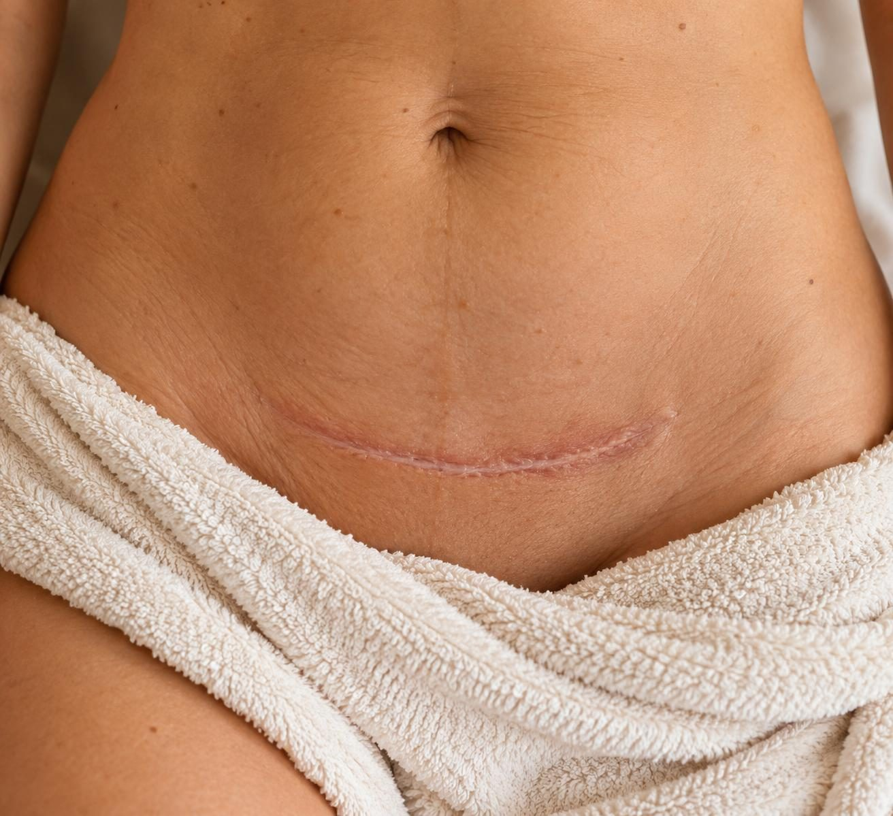

Holi Her · nazorg na een keizersnede
Jouw lichaam droeg een leven
Zachte cupping voor je keizersnedelitteken, en een uur waarin niets van je hoeft.
Iedereen vraagt naar de baby. Ik vraag naar jou.
Er wordt gewogen, gemeten en gefotografeerd, en jij krijgt tussendoor de vraag of je al een beetje slaapt. Terwijl jij degene bent die net geopereerd is.

Zeven lagen diep, en van buiten één lijn
De behandeling
Een zachte cup die het weefsel een klein beetje optilt
Ik beweeg hem langs en rond het litteken, zodat de lagen eronder weer over elkaar leren glijden. Geen vuur, geen glas, en nooit steviger dan jij vraagt.
Eerlijk gezegd
Wat ik je niet beloof
- Dat het litteken verdwijnt. Dat doet het niet.
- Dat één afspraak genoeg is. Meestal zijn het er een paar.
- Dat het bij iedereen werkt. Bij sommige vrouwen verandert er weinig, en dat zeg ik dan ook.
Kom maar, precies zoals je bent
Zeer, moe, met de baby, drie jaar te laat. De deur is dezelfde.
Voor je komt
Wanneer kan ik beginnen na een keizersnede?
Meestal na zes tot acht weken, zodra het litteken helemaal dicht is en je huisarts of verloskundige akkoord is. Daarvoor kunnen we al wel praten, en ik zeg je eerlijk als het nog te vroeg is.
Mijn litteken is jaren oud. Is dat te laat?
Nee. Littekens van drie jaar geleden, of tien, reageren nog steeds, en ouder weefsel verandert vaak sneller dan vrouwen verwachten.
Hoe lang na de bevalling is te laat?
Dat bestaat niet. Er komen vrouwen bij wie de jongste al naar school gaat.
Hier begint jouw zorg
Schrijf me, dan antwoord ik zelf, meestal binnen twee dagen. Vertel zoveel of zo weinig als je wilt.
- Waar
- Adres van de studio volgt
- Wanneer
- Openingstijden volgen